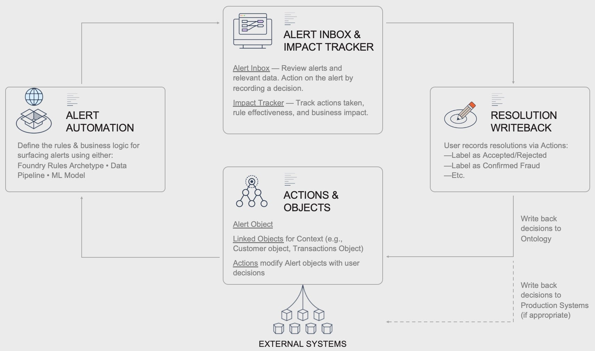
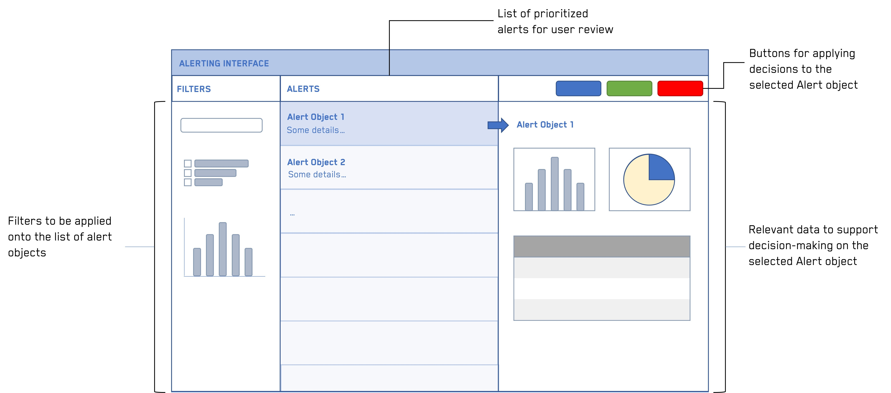
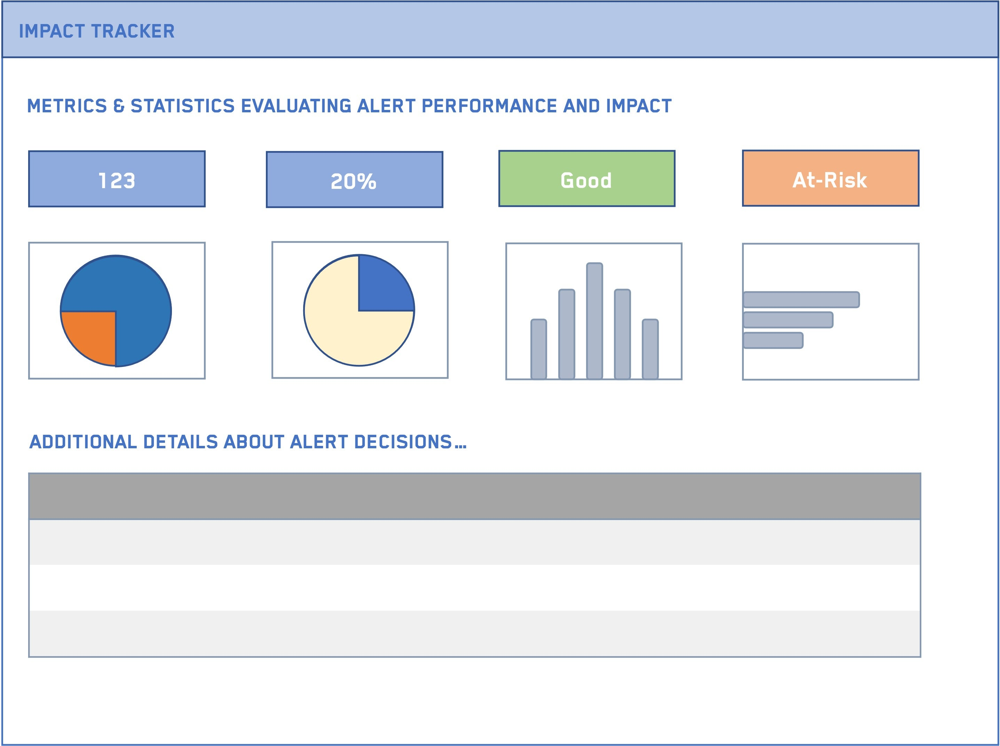
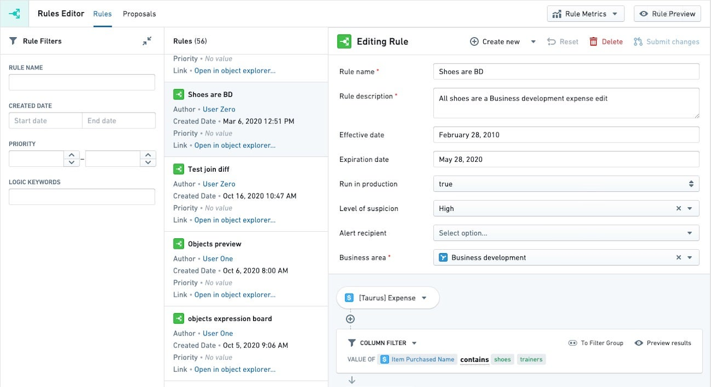

Whether it is detecting fraud or surfacing revenue opportunities, alerting workflows automatically surface issues to be reviewed by an end user, which they can make a decision on at a click of a button. These workflows enable teams to focus their attention on resolving the most pressing issues at hand rather than spending their time manually piecing data together.
Foundryâs Data Connection and Ontology allow organizations to implement this pattern in days instead of months and continue to implement, customize, and maintain it safely and efficiently.
Alerting workflows are designed to automatically surface alerts (updates, issues, opportunities, etc.) for a user to review and make a decision on. Typically, the user is presented with prioritized alerts and relevant data associated with the alerts, which they will review to make a decision. Their decision is recorded using buttons that record their decision (write back) to Foundry data and sometimes production systems, if appropriate.
Using fraud detection as an example, users may receive a list of most to least likely fraud alerts to review. Clicking on an alert shows all the supporting information, based on which users can use a simple button to indicate if it is fraud or not.
Alerting frameworks are great solutions for users who spend significant time sifting through various data sources and manually piecing together data points to identify issues, with the end goal of making a decision about the issue found. Sometimes the end users have basic SQL queries that surface a portion of these issues, or the users do not sift through data at all since the work is too complex.
Alerts can be used for use cases from detecting fraud to surfacing revenue opportunities. The alerts can be generated through a data pipeline, a machine learning model, Foundry Rules, or any combination of these.

The following is a list of interfaces related to the alerting workflow.
The Alerting Interface is the main application users will leverage. From this interface, end users see all their alerts, the data relevant to helping them make a decision about the alert, and buttons they can use to record their decision.
An example interface is shown below, with the most frequently used components. This interface is typically built in Workshop.

For example in fraud detection, the filters may be a fraud likelihood score, a specific type of fraud, etc. The alerts themselves are cases of fraud, and the relevant data may include historical payments and users profiles. The buttons typically might include Fraud/No Fraud, and prompt the user for an explanation.
Related products:
The Impact Tracker shows production and operations metrics associated with the Alerting Interface. The Tracker is typically used by managers to review metrics such as how many alerts have been resolved, what decisions are commonly being made in the Alert Interface, how close they are to reaching their target KPIs, etc.
An example Tracker is shown below, with the most frequently used components. This interface may be built in Quiver or Workshop.

In fraud detection, this Impact tracker might show the percentage of fraud/non-fraud cases reviewed, key drivers and explanations of fraud populated by the users, the dollar impact saved by detecting early fraud, time to decision, etc.
Related products:
Foundry Rules is a Foundry application that allows any user, regardless of coding background, to create and maintain rules on data using a user-friendly point-and-click interface for defining the criteria for any number of alerts. Each rule defined creates a type of alert. Implementation of Foundry Rules is detailed in the alert automation section below.
Related products:
The following is a list of Ontology-related concepts that relate to the set-up of an alerting workflow.
The Alerting workflow will typically include an object type for the trigger (such as a customer, a financial transaction, a manufacturing process, or a service type) and a specific alert object that it is linked to (such as a potential fraud alert, revenue opportunity tied to a service type, or a process optimization opportunity tied to a manufacturing process).
Related products:
Actions are the crux of this workflow, as they record the end userâs decision. From the userâs perspective, these are buttons they click on. In the back-end, the buttons are powered by Ontology Actions that are configured to record what decision the user made. Typical Action fields include:
In fraud detection, the actions would record if the case is determined to be fraud or not, the user who made the decision, when they made the decision, why they made that decision (the explanation), and the specific case ID reviewed.
Related products:
Writeback is the Foundry term for recording a decision. Documentation can be found on the Writeback page. In essence, a copy of the alert object baking dataset is made through the Ontology application. Actions will record the fields defined in the Actions section in the copied (writeback) dataset. In fraud detection, the actions taken on a specific case would then update the ontology and associated datasets to account for the decisions taken (such as by setting whether alert identified fraud and the explanation of the results of the investigation).
In addition to writing back to Foundry, it is common to also write back to production systems such as SAP, Oracle, etc. This typically involves setting up a direct connection to the production system with read and write permissions and feeding the results of the writeback dataset through the connection. Speak with your Palantir team for more details.
Related products:
The following are Foundry topics related to automating alerts.
Foundry Rules is a set of components that allow users to create and maintain rules on data, regardless of their coding background or ability. Foundry Rules can be used to define various different types of alerts based on any desired condition. The output of Foundry Rules can then be converted into alert objects.
An example of the Foundry Rules interface is shown below.

In fraud detection, some customers choose to use Foundry Rules to define a type of fraudulent activity and surface all the relevant cases where that applies. For example, a rule might be: whenever a customer has a charge over $10k or whenever a customer has two consecutive charges in the same day in two different cities.
Related products:
At times, logic for creating alerts may be very prescriptive and involve complex rules that are best suited for coding in a data pipeline.
For example, an insurance company must pay claims according to the contract rates with a healthcare provider, which are reflected in their system as a set of codes. When the contract is renegotiated, a new set of codes should be recorded for the new timespan. In this case, it would be best to encode all the logic for determining which codes should be applied when, and create a proposal object in Foundry where the suggestion is to split the timespan with the new set of codes from the renegotiated contract.
Related products:
Regardless of the pattern used, the underlying data foundation is constructed from pipelines and syncs to external source systems.
Data integration pipelines, written in a variety of languages including SQL, Python, and Java, are used to integrate datasources into the subject matter Ontology.
Foundry can sync data from a wide array of sources, including FTP, JDBC, REST API, and S3. Syncing data from a variety of sources and compiling the most complete source of truth possible is key to enabling the highest value decisions.
Want more information on this use case pattern or looking to implement something similar? Get started with Palantir â.